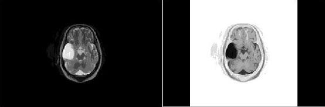
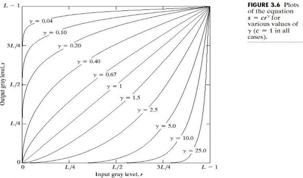
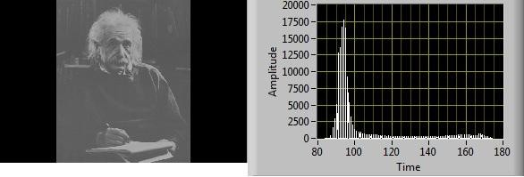
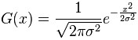
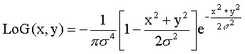
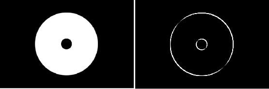

Digital image processing is the use of computer algorithms to perform image processing on digital images. As a subcategory or field of digital signal processing, digital image processing has many advantages over analog image processing. It allows a much wider range of algorithms to be applied to the input data and can avoid problems such as the build-up of noise and signal distortion during processing. Since images are defined over two dimensions (perhaps more) digital image processing may be modeled in the form of multidimensional systems.
Visual information plays an important role in almost all areas of our life. Today, much of this information is represented and processed digitally. Digital image processing is ubiquitous, with applications ranging from television to tomography, from photography to printing, from robotics to remote sensing.
Basic concepts
- Morphological image processing is a collection of non-linear operations related to the shape or morphology of features in an image. Morphological operations rely only on the relative ordering of pixel values, not on their numerical values, and therefore are especially suited to the processing of binary images. Morphological operations can also be applied to greyscale images such that their light transfer functions are unknown and therefore their absolute pixel values are of no or minor interest.
Morphological techniques probe an image with a small shape or template called a structuring element. The structuring element is positioned at all possible locations in the image and it is compared with the corresponding neighborhood of pixels. Some operations test whether the element "fits" within the neighborhood, while others test whether it "hits" or intersects the neighborhood:

A morphological operation on a binary image creates a new binary image in which the pixel has a non-zero value only if the test is successful at that location in the input image.
- Pixel Transformation is also known as Image Enhancement. The principal objective of enhancement is to process an image so that the result is more suitable than the original image for a specific application. So, the specific application may determine approaches or techniques for image enhancement.
Image Negative transformation
Gray level values of the pixels in an image are inverted to get its negative image. Consider a 8 bit digital image of size M x N, then each pixel value from original image is subtracted from 255 as
g (x,y) = 255- f (x,y)
In a normalized gray scale, s = 1.0 – r
Negative images are useful for enhancing white or gray detail embedded in dark regions of an image. Fig.1 shows clear tissue in negative image of cyst.

Power-Law transformations have the basic form

Unlike the log function, a family of possible transformation curves obtained simply by varying γ


Log Transformations
s = c log(1+r) c : constant, r >= 0
We use a transformation of this type to expand the values of dark pixels while compressing the higher-level values
The opposite is true of the inverse log transformation
It compresses the dynamic range of images with large variations in pixel values

Histogram Equilization
Histogram equalization re-assigns the intensity values of pixels in the input image such that the output image contains a uniform distribution of intensities
It is called histogram linearization, too
The probability of occurrence of gray level k
p(r=k) = nk/n , k=0, 1, …, L-1
where nk is the number of pixels in the image having gray level k We use the following transformation

This technique enhances appearance of a digital image by spreading gray levels so that they are evenly distributed across their range as shown in given fig.

Filters
Gaussian Low Pass Filter
A Gaussian blur (also known as Gaussian smoothing) is the result of blurring an image by a Gaussian function
The Gaussian blur is a type of image-blurring filters that uses a Gaussian function (which also expresses the normal distribution in statistics)
for calculating the transformation to apply to each pixel in the image. The equation of a Gaussian function in one dimension is

in two dimensions, it is the product of two such Gaussians, one in each dimension:

Laplacian of Gaussian (LOG)
The LOG module performs a Laplacian of Gaussian filter. This filter first applies a Gaussian blur, then applies the Laplacian filter (see convolution) and finally checks for zero crossings (i.e. when the resulting value goes from negative to positive or vice versa). The end result of this filter is to highlight edges.
Laplacian filters are derivative filters used to find areas of rapid change (edges) in images. Since derivative filters are very sensitive to noise, it is common to smooth the image (e.g., using a Gaussian filter) before applying the Laplacian. This two-step process is call the Laplacian of Gaussian (LoG) operation.

There are different ways to find an approximate discrete convolution kernal that approximates the effect of the Laplacian. A possible kernel is

This is called a negative Laplacian because the central peak is negative. It is just as appropriate to reverse the signs of the elements, using -1s and a +4, to get a positive Laplacian. It doesn't matter. To include a smoothing Gaussian filter, combine the Laplacian and Gaussian

Gabor Filters
In image processing, a Gabor filter, named after Dennis Gabor, is a linear filter used for edge detection. Frequency and orientation representations of Gabor filters are similar to those of the human visual system, and they have been found to be particularly appropriate for texture representation and discrimination. In the spatial domain, a 2D Gabor filter is a Gaussian kernel function modulated by a sinusoidal plane wave. The Gabor filters are self- similar: all filters can be generated from one mother wavelet by dilation and rotation.

Sobel Edge Detection
The Sobel operator is used in image processing, particularly within edge detection algorithms. Technically, it is a discrete differentiation operator, computing an approximation of the gradient of the image intensity function. At each point in the image, the result of the Sobel operator is either the corresponding gradient vector or the norm of this vector. The Sobel operator is based on convolving the image with a small, separable, and integer valued filter in horizontal and vertical direction and is therefore relatively inexpensive in terms of computations. On the other hand, the gradient approximation that it produces is relatively crude, in particular for high frequency variations in the image.
The operator uses two 3×3 kernels which are convolved with the original image to calculate approximations of the derivatives - one for horizontal changes, and one for vertical. If we define A as the source image, and Gx and Gy are two images which at each point contain the horizontal and vertical derivative approximations, the computations are as follows:

where * here denotes the 2-dimensional convolution operation. Since the Sobel kernels can be decomposed as the products of an averaging and a differentiation kernel, they compute the gradient with smoothing. For example Gx can be written as

The x-coordinate is defined here as increasing in the "right"-direction, and the y-coordinate is defined as increasing in the "down"-direction. At each point in the image, the resulting gradient approximations can be combined to give the gradient magnitude, using:

Using this information, we can also calculate the gradient's direction:

where, for example, Θ is 0 for a vertical edge which is darker on the right side.

Similarly you can use custom coefficients to apply convolution on an input image by passing 3×3 kernels in the given input array. And in custom filter by entering formula for kernel as function of 'x' and 'y' in 'filter parameter' box.
Segmentation Methods
In computer vision, image segmentation is the process of partitioning a digital image into multiple segments (sets of pixels, also known as superpixels). The goal of segmentation is to simplify and/or change the representation of an image into something that is more meaningful and easier to analyze. Image segmentation is typically used to locate objects and boundaries (lines, curves, etc.) in images. More precisely, image segmentation is the process of assigning a label to every pixel in an image such that pixels with the same label share certain visual characteristics.
The result of image segmentation is a set of segments that collectively cover the entire image, or a set of contours extracted from the image (see edge detection). Each of the pixels in a region are similar with respect to some
characteristic or computed property, such as color, intensity, or texture. Adjacent regions are significantly different with respect to the same characteristic(s).

- To give the students a general understanding of the fundamentals of digital image processing.
- Introduce the student to analytical tools which are currently used in digital image processing as applied to image information for human viewing.
- Develop the students ability to apply these tools in the laboratory in image restoration, enhancement and compression.

1.LabVIEW 2010 Professional Development System


The quiz is included in the standalone application.

Procedure for the experiment is shown in the following video.

- Gonzalez, Rafael; Steve Eddins (2008). "4". Digital Image Processing Using MATLAB (2nd ed.). Mc Graw Hill.
- Digital Image Processing, 3rd ed, by Gonzalez and Woods.
- http://en.wikipedia.org/wiki/Digital_image_processing
- http://www.cs.auckland.ac.nz/courses/compsci773s1c/lectures/ImageProcessing- html/topic4.htm
- Giovanni (Gianni) Ramponi, Professor of Electronics. DI3, University of Trieste
- http://www2.units.it/ramponi/teaching/DIP/materiale/dip03.pdf
- http://en.wikipedia.org/wiki/Gaussian_blur
- http://homepages.inf.ed.ac.uk/rbf/HIPR2/gsmooth.htm
- http://www.cs.utah.edu/~arul/report/node11.html
- http://en.wikipedia.org/wiki/Sobel_operator
- http://homepages.inf.ed.ac.uk/rbf/HIPR2/sobel.htm